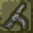

Knights now has two different control systems: the "new" and "old" systems. The new system is the default, and if you haven't played Knights before, you may find this the easier of the two to use.
You can switch control systems from the Options screen.
To move, use the WASD keys. Your knight will carry on moving until he reaches the next dungeon square.
Some dungeon squares (such as doors or chests) require you to "approach" them before you can interact with them. To approach a square, move your knight towards the square, and keep the movement key held down.
Below the main dungeon view you will see an Action Bar. Clicking the icons here (with the left mouse button) will make your knight perform various actions, as follows:
Attack: Attack with your current weapon. Keeping the mouse held down will attack repeatedly.
Open/close: Open or close a door or chest in front of your knight.
Pick up: Pick up an item. Items on the floor can be picked up directly, while items on tables or in chests require you to "approach" the table or chest (see above) before clicking this icon.
Throw Axe: Throw an axe that you are currently holding.
Fire Crossbow: Fire a crossbow. The crossbow must be loaded first (see Items).
Throw Dagger: Throws a dagger in the direction you are facing. Note you will have to keep the mouse held down for a short time before the daggers start firing.
Drop item in hand: Drop currently held item onto the floor. You can also drop onto tables or into chests if you first "approach" them (see above).
Drop gem: Drop a gem. This may be useful if you want to hide some of your gems in secret places, so that your opponent cannot get all of your gems simply by killing you.
Lock Picks: Attempt to open a locked door using the lock picks. You'll need to keep the mouse button held down while doing this. Picking locks takes some time, so be patient.
Bear Trap: Sets a bear trap. The trap will be placed into the square in front of you.
Poison Needle Trap: Sets a poison needle trap. This can only be used if you are approaching a closed door or treasure chest.
 Spring Blade Trap: Sets a spring blade trap. Again, this only works while you are approaching a door or chest.
Suicide: Allows you to commit suicide. This can be useful if you get stuck somehow. To prevent accidental suicides, you need to hold down both mouse buttons to perform this action.
The left and right mouse buttons can be used as shortcuts, as follows:
These shortcuts allow you to perform most actions using only the WASD keys and the mouse buttons, with the Action Bar being used only rarely. Alternatively, you can ignore the shortcuts and do everything using the Action Bar, if you prefer.
If you are carrying a sword, axe or staff then your knight will automatically try to parry any attacks coming from the front. There is no separate control for this, as parrying will happen automatically, assuming you are not pressing any keys or clicking any of the action icons.
The staff is the best parrying weapon, followed by the sword, and the axe is the worst. Hammers and crossbows are too clumsy, and wands too fragile, to be used for parrying.
Pressing ESCAPE in-game will bring up a display of the current quest. You can then press ESCAPE again to return to the game, or Q to quit.
The old control system is designed for players who are familiar with the original Amiga version of Knights.
The controls are based around four movement keys plus separate "action" and "suicide" keys. The default key assignments are as follows:
| Player 1 | Player 2 / Network Games | |
|---|---|---|
| Up | W | UP ARROW |
| Down | S | DOWN ARROW |
| Left | A | LEFT ARROW |
| Right | D | RIGHT ARROW |
| Action | Q | RIGHT CTRL |
| Suicide | F1 | F12 |
These keys can be re-defined in the Options screen.
In this control system the Action Bar does not appear. Instead the Action key is used to perform all actions, as follows:
Holding down the action key for a longer period will open up the Action Menu. This is basically the replacement for the Action Bar in the old control system. The Action Menu looks like this:
Instead of clicking the icons, you select them by pushing one of the four direction keys (while still keeping the Action key held down). Otherwise the icons behave exactly as described above.
In the old control system, there is a separate key to commit suicide. This replaces the Suicide icon.
The ESCAPE key works the same as above (i.e. it brings up the quest menu and allows you to quit). In a split screen game, pressing ESCAPE will also pause the game.